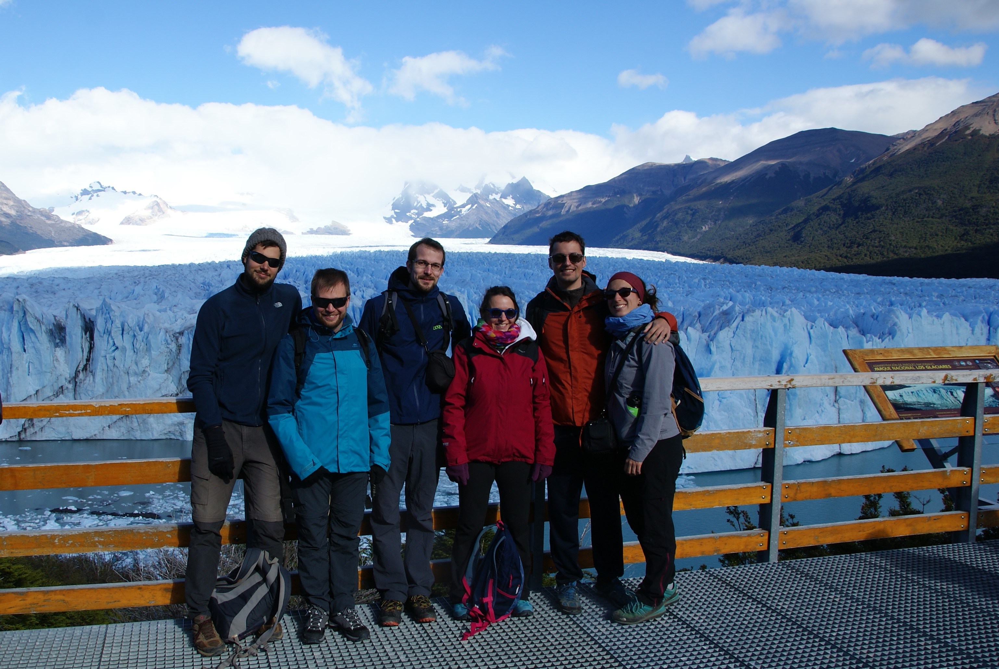

A chaque début de bilan, je me demande comment faire ressortir ce qu'on a vécu. C'est d'autant plus dur avec l'Argentine, puisque c'est jusqu'à maintenant le pays où nous sommes restés le plus longtemps: 8 semaines ! Et pourtant, nous n'en avons vu qu'une petite partie.
Ce qui marque en premier, du point de vue touristique c'est la diversité des paysages. Nous avons débuté notre périple en Patagonie et sommes remontés à plus de 3850 km au nord afin de passer la frontière avec la Bolivie. Vous pouvez donc vous en douter, nous avons vu une belle diversité de nature.
La Patagonie nous a espanté. Que ce soit du côté chilien ou du côté argentin. Torres del Paine tout d'abord. Ce trek chilien si galère a organiser à distance, mais qui nous l'a si bien rendu en terme de paysages. Merci pour tes massifs montagneux changeants. Merci pour tes forêts. Merci pour tes glaciers. Merci pour tes lacs. Merci pour ta faune. Tu nous a challengé, appris, épaté. On reviendra pour toi, faire le circuit en O !
Les villes ensuite. El Calafate, je n'ai sûrement pas su capter ton charme. Tu m'as semblée construite pour les touristes américains et pourquoi pas européens. Tes boutiques de montagne à la chaine, tes restos et tes hôtels hors de prix. Tu as malgré tout un accès à ce lac absolument magnifique lorsqu'on vient l'observer à la bonne lumière. Mais tu as été le point de départ d'une expédiation phénoménale : le glacier Perito Moreno. Ce gigantesque mur de glace qui se finit dans l'eau. Et qui s'étend sur des kilomètres d'aspérités irrégulières bleutées, grises et blanches. Nous avons eu la chance de t'observer en marchant sur des passerelles ou de plus près sur un bateau. On se sent petite, et tellement reconnaissante d'avoir pu le voir.
El Chalten, j'ai pour ma part beaucoup plus apprécié ton ambiance de gros village. Et surtout le fait de pouvoir te quitter à pied pour débuter des randonnées qui sont à la hauteur de la réputation de la Patagonie. Merci pour le Fitz Roy, superbe massif montagneux. Avoir l'opportunité de le découvrir, toujours par beau temps fût un privilège. Fitz Roy, nous avons pu t'apercevoir frigorifiés à 5 heures du matin, frappé par les premièrs rayons du soleil mais aussi après une longue randonnée, lorsque tu te reflétais sur un lac au bord duquel nous avons picniqué. Merci pour cette nature, Patagonie, nous reviendrons !
Je saute directement à la dernière étape "plein air" : la boucle de Salta. Tu nous a aussi beaucoup étonné. Avec toi, nous avons découvert des paysages désertiques peuplés de gigantesques cactus, un petit salar (le premier !), des canyons dignes des USA, des montagnes colorées, des vignes à perte de vue, bref encore une fois, chapeau bas l'Argentine !
Pour ce qui est du volontariat, j'ai l'impression de me répéter à chaque bilan... Donc en résumé, expérience inoubliable dans une famille en or, avec des volontaires pour la plupart locaux (Argentine et Brésil), et une coloc française. Chaque fois, le volontariat nous permet de nous impliquer avec des locaux dans un projet qui leur est cher et c'est une grande opportunité de pouvoir partager ces temps de qualité. Et puis dans le cas de celui-ci, qui ne rêverait pas d'avoir pour travail à s'occuper d'un potager ou de randonner ?
Un autre aspect inédit de notre voyage : partager trois semaines avec nos amis. On ne peut pas dire qu'il n'y avait pas une petite appréhension avant de débuter car nous n'avions jamais fait des vacances si longues avec des amis. Mais surtout pour le rythme souhaité par chacun, puisqu'ils étaient en vacances et nous en voyage au long cours. Donc des budgets différents, un temps différent, pour au final une intensité différente. Mais ça a été un moment extra et partager tous ces moments avec eux m'a vraiment trop fait plaisir. Merci Caro, Christophe, Julien et Johann ! On vous kiff les copaings !
Enfin pour finir, mon sujet de prédilection largement représenté dans ce pays : Femmes et Féminisme ! Ce qu'on peut dire, c'est que ce pays est très largement porté par un mouvement féministe. Il a débuté il y a quelques années (moins d'une dizaine sans qu'aucune des personnes interrogées n'aient pu être plus précise). Dans les grandes villes traversées, les librairies regorgent de livres féministes écrits par des penseuses(eurs) argentins et internationnaux. Tous les sujets y passent : les violences de genre, les féminicides, l'avortement, l'évolution et les droits de la femme, le viol, l'égalité ... On peut assez facilement passer à côté de cet aspect "librairie". Mais il est impossible de passer à côté de la facette "art engagé". Les femmes militent et ça se voit sur les murs des villes et villages de ce pays. Des peintures sont présentent partout pour dénoncer les violences faites aux femmes et pour promouvoir le respect.
Du coup j'ai essayé de piger ce qui se passait, ce qui m'a amené dans un des centres de lutte contre ces violences, à Salta. Les personnes y travaillant ont été assez surprises de la démarche, mais j'ai pu avoir une longue conversation avec la gérante du lieu (rattaché à l'hôpital). Elles n'ont que peu de chiffres nationaux, mais rien que dans leur région, le taux de décès de femmes victimes de violence conjugale est de une chaque 30 heures... Et c'est juste dans cette région, sans avoir des statistiques très poussées dans les populations reculées. Leur action d'aide est nouvelle et remonte à deux ans, et il n'y a pour l'instant que peu de consultations spontanées. Les personnes sont souvent adressées par l'hôpital, après des violences physiques avérées. Leur première mission est déja de communiquer avec leurs collègues de l'hôpital afin de leur parler de leur centre, et de les convaincre de leur envoyer les personnes victimes. Sachant qu'un signalement doit être fait à la police à chaque cas. Une conversation instructive, avec des personnes inspirantes au début de leur projet, avec tellement de travail devant elles ! Buena Suerte !
Enfin on ne peut pas parler d'un mouvement féministe argentin sans parler évidement du mouvement pro-IVG. Ce mouvement est représenté par un foulard vert, symbole du droit à l'avortement que beaucoup de femmes portent. Le projet de loi de légalisation de l'IVG a été présenté six fois depuis 2007 à la chambre des députés. Le dernier échec à 7 voix près date du 9 août 2018. Le parcours de l'IVG en Argentine est donc le fruit d'un long travail militant, d'artistes, de penseurs, engagés pour les droits des femmes à disposer librement de leur corps.
Le prochain vote sera proposé au congrès argentin le 28 mai 2019 (dans quelques jours), soit 5 mois avant la prochaine élection présidentielle du pays qui risque d'être très mouvementée, inflation oblige. On suivra votre combat et croisons tous nos doigts pour vous ! Buena suerte !
Pour finir sur ce paragraphe, je voudrais citer Juan Solanas, réalisateur du film "Que sea ley !" (que ce soit légal) : "Comment ce pays si lumineux, qui a des lois si progressistes en matière LGBT, avec le mariage pour tous légal depuis 2010, est-il capable d'autant d'obscurité en ce qui concerne le droit des femmes à décider ?" Merci Le Monde (article sur le droit à l'avortement argentin).
Je laisse la parole à Sylvain !
Bon encore une fois, dur de passer après Maïlys et autant de détails et d'engagement. Mais ça fait plaiz' ;)
En plus, je vais dire sensiblement la même chose qu'elle, mais bon, restez jusqu'à la fin quand même, svp (ce sera plus court).
Wouhahou ! juste WOUHAHOU !!!
Voilà mon bilan pourrait s'arrêter là. Si je ne devais retenir qu'une chose de l'Argentine (mais ce serait un peu con quand même), ce serait la Patagonie, ses paysages grandiose et son sentiment du bout du monde. ET avec cette lumière, dont j'ai déjà parlé à certains, que je n'ai jamais vu ailleurs, incroyable, et qui donne des couleurs si belles. Et d'ailleurs, si jamais vous vous posiez la question, il faut absolument le voir par soi-même. Les photos ne rendront jamais justice au spectacle que nous réserve cette nature.
Bon voilà, sinon oui, Torres del Paine, top, on s'est dépassés (mais je reste deçu de mon problème de genou qui m'a gâché la fin), on n'avait jamais fait ça avant, maintenant on sait qu'on en est (presque) capables. El Calafate, top, le Perito Moreno, grandiose, le Fitz Roy, incroyable. Ma préférence, si vous vous demandez, va vers El Chalten, cette petite ville d'où partent tout un tas de rando dans des paysages incroyables. En plus on était bien, dans un chalet pépère avec les potos ! Le pied !
Tout est dans le titre, j'ai aussi beaucoup apprécié le nord argentin et le petit roadtrip qu'on s'est payé. Les paysages étaient sublimes, le contact avec la culture indigéne plus présent, et encore une fois on a avalé les kilomètres avec les potos, c'était bien sympa !!!
Et bien sûr, ensuite, notre petit volontariat à Aldea Luna, un peu coupé du monde, dans un cadre très sympa où j'ai pu apprendre les bases de l'espagnol, qui me sauvent maintenant. C'était aussi un rapprochement avec la nature, une vie plus simple, moins technologique. Une petite parenthèse très sympa où on a pu lier un peu plus avec des locaux.
Bien sûr l'Argentine est un pays vaste, qui a beaucoup à offrir, tant en paysage magnifique qu'en culture.
Je le savais déjà mais ici le médium de la BD n'est pas en reste. En témoigne les librairies bien remplies avec de l'art séquentiel. Malheureusement pour moi, la BD a cela d'ingrat qu'en voyage, c'est une hérésie, impossible de ramener quelques bouquins-souvenirs, c'est bien trop lourd. Sniff, je me contenterai du lèche-vitrine donc.
Les argentins donc, m'ont laissé le sentiment d'un peuple très pluriel dans les cultures et les inspirations. De l'espagnol, du français, de l'italien, et toutes les cultures indigènes (pas toujours misent en avant d'ailleurs). C'est un pays à l'histoire récente riche et tumultueuse, un peuple qui ne s'en laisse pas dire et descend souvent dans la rue (en tant que français, je plussoie !), qui peut être certes en avance sur certains sujets (notamment à propos de la communauté LGBT, n'en déplaise à certain ça me semble un progrès dont on ferait bien de s'inspirer) mais qui a encore beaucoup de luttes à mener (le droit des femmes, beaucoup, mais ça bouge de ce côté là c'est cool, et on est quand même pas les roi du pétrole sur ce sujet en France, et aussi la corruption, la pauvreté, etc.).
C'est malheureusement un pays qui semble rentrer dans un crise économique importante, avec une inflation importante (en 2 mois, on est passé de 1€ pour AR$45 à AR$50 !!!). J'espère qu'ils trouveront rapidement une porte de sortie, le problème étant, semble-t-il d'après beaucoup, politique. Ici comme ailleurs, il y a la corruption, les lobbys, où les puissants protègent leurs intérêts plutôt que le bien commun. N'est-ce pas ?! (suivez mon regard...).
Du coup, le vrai bilan, la vrai conclusion de tout ça, c'est bien entendu qu'on va devoir revenir (héhé).
Salut Argentine passionnante, bonjour Bolivie prometteuse.
